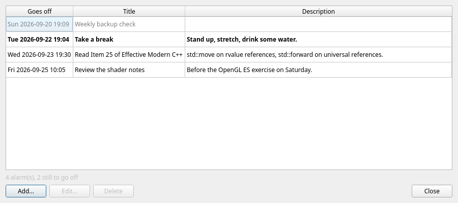
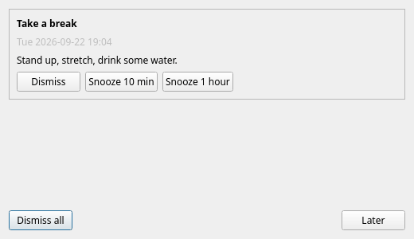
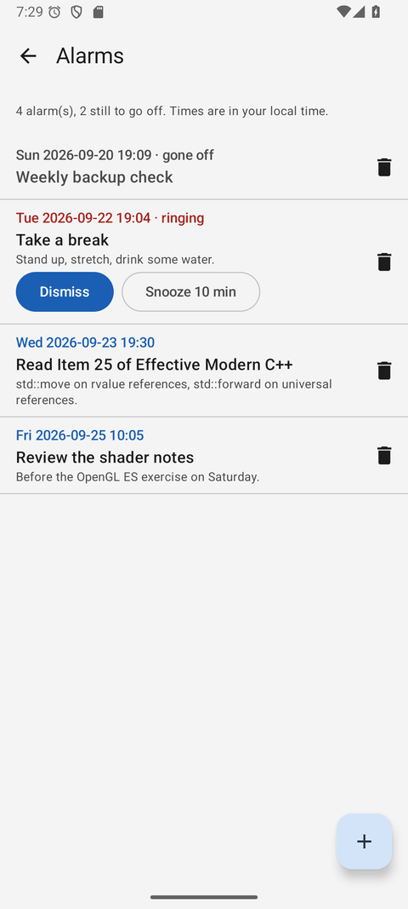
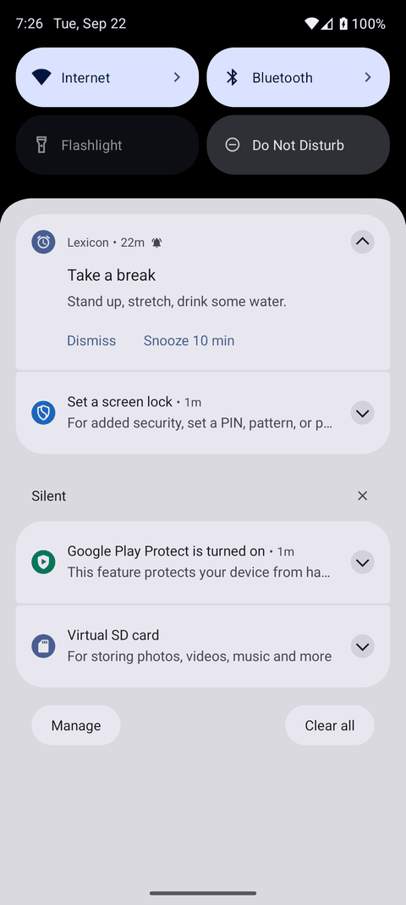

Alarms
A reminder that belongs with your knowledge base: read chapter 7 tonight, revisit the shader notes on Saturday, stand up and stretch. Alarms live in the dictionary, travel with it, and ring in whichever client you have in front of you.
The alarm list
Open Manage → Alarms... on the desktop or in the web client, or Alarms in the Android drawer. Alarms are listed soonest first: when it goes off, the title, and the first line of the description.
- Add... and Edit... (or a double click) open a small form: a title, the date and time, and a plain-text description.
- Delete asks first.
- An alarm that is still ringing is shown in bold; one that went off and was dealt with stays in the list, greyed out, until you delete it.

One moment, every time zone Times are entered and shown in your own time zone and stored in UTC. An alarm set on the desktop in Prague shows the same moment in a browser or on a phone anywhere else.
When one goes off
An alarm rings until someone deals with it — it does not disappear because nobody was looking.
| Client | What happens |
|---|---|
| Desktop | While Lexicon runs, an Alarm window stays on top with every alarm that has gone off, and the buttons Dismiss, Snooze 10 min and Snooze 1 hour. The system tray shows a notification where there is one. Later hides the window; anything still ringing comes back in five minutes. |
| Web client | While the page is open, a panel over the page offers the same buttons, with a short chime and a system notification when the browser allows one — Manage → Alarms... has an Allow notifications button for that. |
| Android | Alarms ring even when the app is closed: the phone schedules them with the system and shows a notification with Dismiss, Snooze 10 min and Snooze 1 hour. Swiping the notification away dismisses the alarm too, and the Alarms screen has the same buttons. |



Dismissed once, quiet everywhere
- A dismissal is kept on the server, so dismissing an alarm on the phone stops it ringing on the desktop and in the browser too.
- An alarm moved to a new time rings again at that time.
- The Android app checks the server every half hour for alarms added or moved elsewhere, and schedules them again after a restart of the phone.
- Signing out of the Android app takes its alarms off the phone.
- Alarms are part of the dictionary: they travel with export and import.
Android permissions Android 13 and later ask to allow notifications, and exact alarms keep them on the minute. The app's Alarms screen offers both — without them, a reminder can arrive late or not at all.